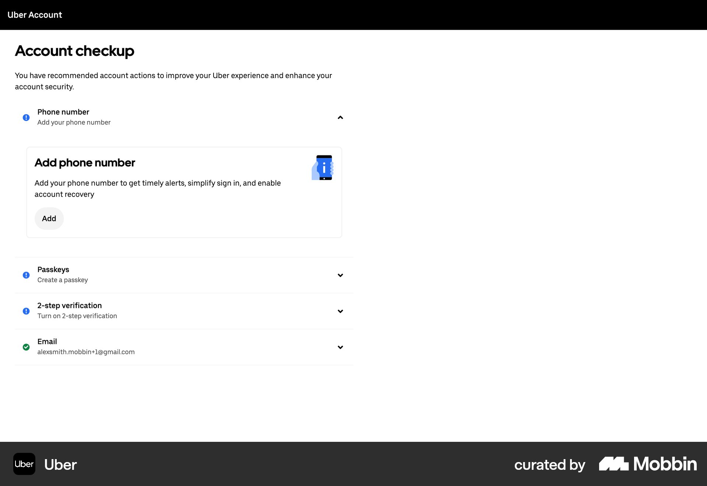

The products that make the first fix obvious set the order themselves, and open the first item

Uber · Account checkupMobbin ↗

Google Ads · Security tasksMobbin ↗
What to notice
- Uber opens "Phone number" with its "Add" button; the rest wait collapsed.
- Google Ads keeps the done task, with a check, at the bottom.
- Every example has 2–5 items. None shows this at 56.
- No one says why an item is first.
Fit with Guardio
Reuse CollapsibleCard (defaultOpen) in a compact variant; extend the row with a done state.
Security products with many issues group them by what you have to do, not by priority

NordVPN · Password HealthMobbin ↗

Proton Pass · Pass MonitorMobbin ↗
What to notice
- Exposed / Weak / Reused (NordVPN); Weak / Reused / Inactive 2FA / Excluded (Proton).
- One set of instructions serves many items. It scales.
- But it doesn't pick a first item, and zero groups still take space.
- Priority grouping appears only as a user setting in a task tool (Unify).
Fit with Guardio
Reuse Card + CardHeader + CountBadge, with IconTile rows inside.
The one long list in the set is also the closest to Guardio's Home today, and it gives no place to start

Surfshark · Scan resultsMobbin ↗

NordVPN iOSMobbin ↗
What to notice
- Surfshark: High, Low, High, High… The order mixes severities, the issue is just "Breach", and the advice is to "contact your local anti identity theft organization".
- NordVPN: "You are at risk" for a single leak. The single "Review and resolve" button is good; the alarm is not.
Fit with Guardio
Doesn't fit. Guardio's red hero belongs to At risk (payment failed). Red to-dos would blur the two.